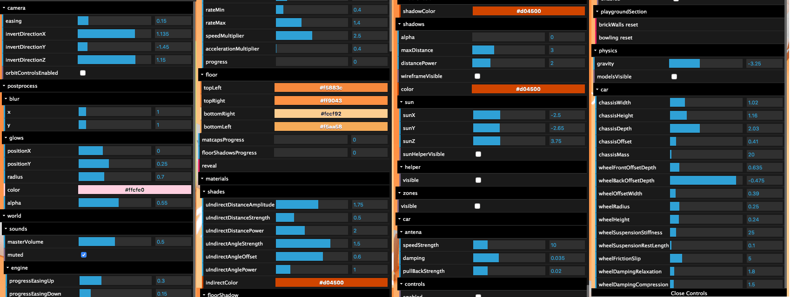
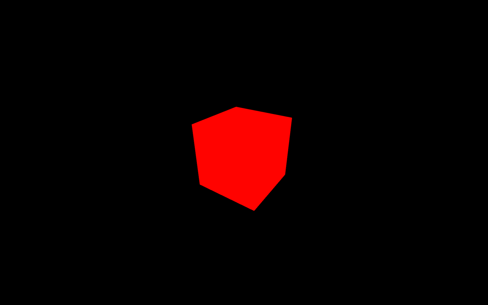
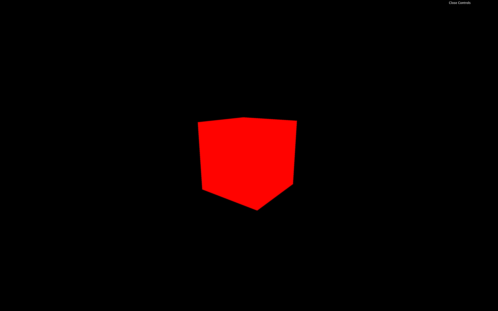
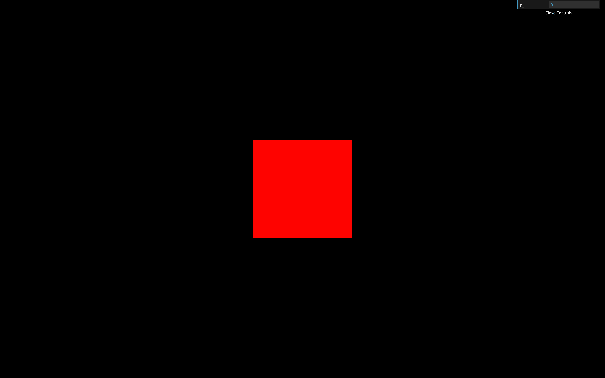
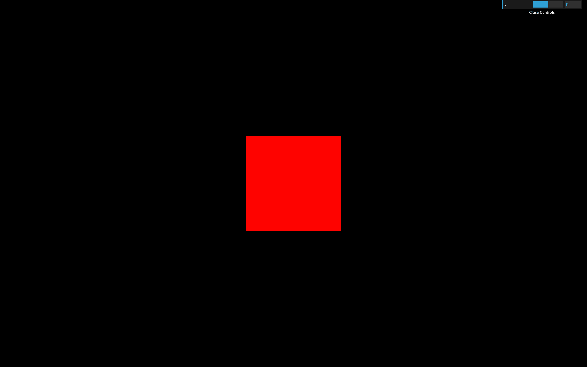
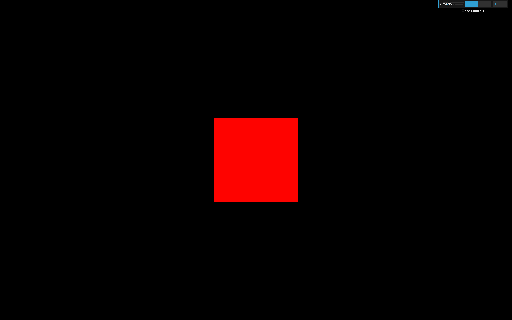
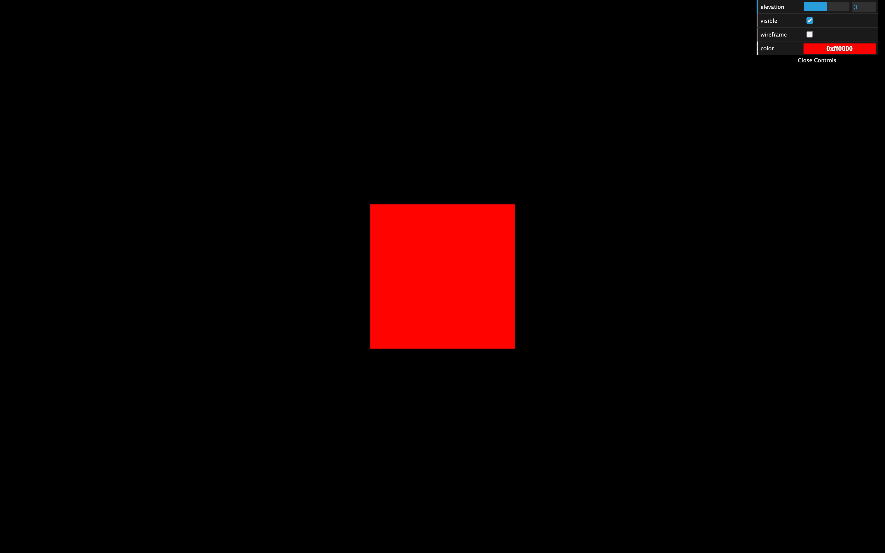

An essential aspect of every creative project is making debugging easy and tweaking your code. The developer (you) and other actors working on the project (like designers or even the client) must be able to change as many parameters as possible.
You have to take this into account for them to find the perfect color, speed, quantity, etc. for the best experience. You might even get unexpected results that look great.
First, we need a debug UI.
While you can create your own debug UI using HTML / CSS / JS, there are already multiple libraries:
All of these can do what we want, but we will use the most popular one, which is dat.GUI. Feel free to try the other ones.
Dat.GUI hasn't been updated for a long time and some vulnerabilities warnings might show up if we add the library to our project.
Fortunately, there is an alternative library named lil-gui that can be used as a "drop-in replacement for dat.gui". Meaning that we can use it the same way we would have use dat.gui.
The course has been mostly written and recorded with dat.gui and the texts, screenshots and videos will refer to dat.gui, but you should install and use lil-gui instead (which is what we are going to do right below).
The next lesson's starters files will be using lil-gui.
You can find a pretty good example of debug UI on my portfolio. This UI only shows up when you add #debug to the URL.
https://bruno-simon.com/#debug

You can tweak the gravity, the colors, the speed, the elements position, etc.
While it took me a lot of time to create all those tweaks, the game would appear less balanced without it.
In the starter, we have our cube, but the dependencies don't include Dat.GUI. We will add it and create some tweaks.

To add Dat.GUI to our Webpack project, we can use the dependency manager provided with Node.js called NPM (just like we did for GSAP in a previous lesson).
In your terminal (while the server is not running or by using another terminal window on the same folder) run npm install --save lil-gui
As mentioned earlier, we are installing lil-gui instead of dat.gui, but we will refer to it as dat.gui in the rest of the course.
Dat.GUI is now available in the /node_modules/ folder and we can import it in our script.js. Don't forget to relaunch the server:
You can now instantiate Dat.GUI:

This will result in an empty panel on the top right corner of the screen.
There are different types of elements you can add to that panel:
true or false)Let's see some of those.
To add an element to the panel, you must use gui.add(...). The first parameter is an object and the second parameter is the property of that object you want to tweak. You need to set it after you created the concerned object:

A range should appears in the panel. Try to change it and watch the cube moving accordingly.
To specify the minimum value, the maximum value and the precision, you can set them in the parameters:

Or you can use the methods min(...), max(...) and step(...) by chaining directly after the add(...) method:
If you don't like having too many methods chained in one line, you can simply add line breaks:
To change the label, use the the name(...) method:

Dat.GUI will automatically detect what kind of property you want to tweak and use the corresponding element. A good example is the visible property of Object3D. It is a boolean that, if false, will hide the object:
As you can see, Dat.GUI chose a checkbox because the visible property is a boolean.
We can do the same with the wireframe property of the material:
Handling colors is a little harder.
First, we need to use addColor(...) instead of add(...). This is due to Dat.GUI not being able to know if you want to tweak a text, a number or a color just by the type of the property.
Secondly, you'll have to create an intermediate object with the color in its properties and use that property in your material. That is due to the Three.js material not having a clean and accessible value like #ff0000.
Create a parameter variable at the start of your code right after the import part:
Then, after instantiating your gui variable, add the following tweak:

You should see a color picker in your panel. The problem is that changing this color doesn't affect the material. It does change the color property of the parameter variable, but we don't even use that variable in our material.
To fix that, we need Dat.GUI to alert us when the value changed. We can do that by chaining the onChange(...) method and updating the material color using material.color.set(...). This method is very useful because of how many formats you can use like '#ff0000', '#f00', 0xff0000 or even 'red':
Currently, the 0xff0000 color is specified at two places: in the parameters object and in the material.
While it's not a big deal, if we want to change the color, we'll have to do it at those two places.
Let's simply fix that by using the parameters.color property in our material:
To trigger a function, like the color value, we must add that function to an object. We can use the parameters object we created earlier to add a spin property containing the function that will animate the cube:
And again, we can add the tweak to our gui after instantiating it:
You should see a spin button, and clicking on it will result on your cube doing a 360 rotation.
Press H to hide the panel.
If you want the panel to be hidden from start, call gui.hide() after instantiating it.
You can close the panel by clicking on its bottom part.
If you want the panel to be closed by default, you can send an object when instantiating Dat.GUI and pass it closed: true in its properties:
You can change the panel's width by drag and dropping its left border (although please note, it doesn't always work).
If you want to change the default width of the panel, add width: ... in the properties:
If you want to know more about Dat.GUI, here are some links:
We will use our debug panel at specific moments of the next exercises. But feel free to add as many tweaks as you want. It's an excellent way to practice and to start building some creative stuff.
I would recommend you to add tweaks as you progress. If you think of adding all the tweaks at the end of the project, you'll probably end up with no tweak at all.